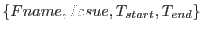
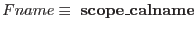
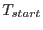
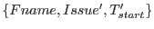
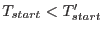
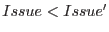
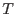
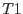
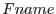
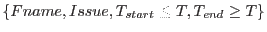

Here we address the issue of how to determine what calibration files make up the current calibration file for a given observation time.
Each calibration file has a validity start date and a validity end date. These are indicated by the FITS keywords VALDATE and EVALDATE. A missing EVALDATE is taken to mean no end of validity.
Given the naming convention above, a calibration file can be labeled with a quadruplet of the form , where , and is optional.
New issues of a calibration file can enter the archive with any , any , and increasing issue numbers.
In the simplest case (no end of validity date), a new version of the calibration file -- call it , will have  and  (figure 1).
A more complex situation is illustrated in figure 2. Here new versions are introduced to improve on past calibrations.
In figure 3 we show an example where a CCF constituent has an end of validity date. In this case at the time  the situation is the same as shown in figure 2, whereas at the time  the constituent xmm_ExampleTwo_005.ccf is no longer applicable.
Within this scheme, at any time the applicable issue of the calibration file  is obtained by selecting among all files  the one with the higher issue number.
Should it become necessary, a new can be introduced in the archive, as illustrated in figure 4.
With this scheme the number of constituents in the current calibration file is not fixed, and can be determined only when the time is specified.